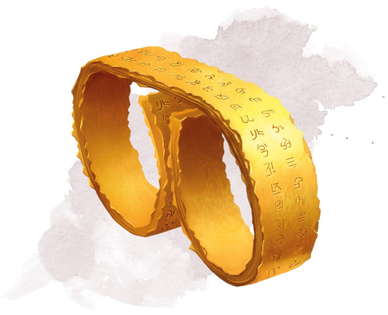

Ring of Spell Storing
Ring, rare (requires attunement)
This ring stores spells cast into it, holding them until the attuned wearer uses them. The ring can store up to 5 levels worth of spells at a time. When found, it contains 1d6 - 1 levels of stored spells chosen by the DM.
Any creature can cast a spell of 1st through 5th level into the ring by touching the ring as the spell is cast. The spell has no effect, other than to be stored in the ring. If the ring can't hold the spell, the spell is expended without effect. The level of the slot used to cast the spell determines how much space it uses.
While wearing this ring, you can cast any spell stored in it. The spell uses the slot level, spell save DC, spell attack bonus, and spellcasting ability of the original caster, but is otherwise treated as if you cast the spell. The spell cast from the ring is no longer stored in it, freeing up space.
Any creature can cast a spell of 1st through 5th level into the ring by touching the ring as the spell is cast. The spell has no effect, other than to be stored in the ring. If the ring can't hold the spell, the spell is expended without effect. The level of the slot used to cast the spell determines how much space it uses.
While wearing this ring, you can cast any spell stored in it. The spell uses the slot level, spell save DC, spell attack bonus, and spellcasting ability of the original caster, but is otherwise treated as if you cast the spell. The spell cast from the ring is no longer stored in it, freeing up space.
Dungeon Master´s Guide (SRD)
